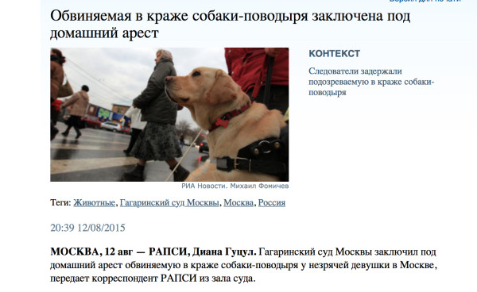
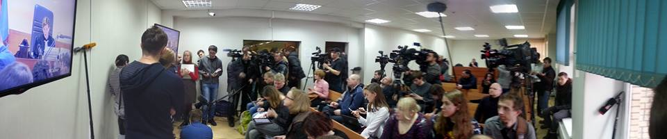
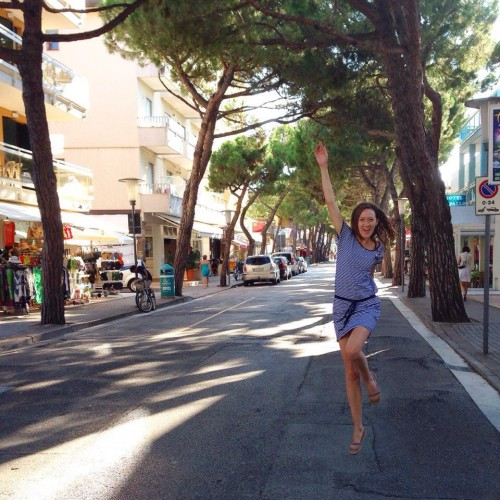
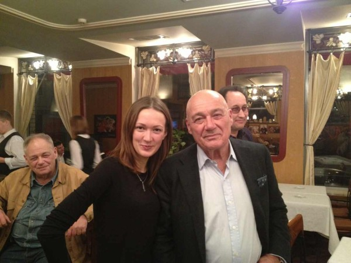

Диана, учась на журфаке, несколько лет готовила материалы для нашей газеты. Грация, прилежность, молодость — вот бы как я охарактеризовал её, если бы меня попросили сделать это в трёх словах. Получив высшее образование, и не дожидаясь даже диплома, Диана уехала в Москву.
Работала в РИА «Новости», сейчас — руководитель службы правовой информации и судов общей юрисдикции РАПСИ. Если вы читаете в интернете информацию из московских судов, то первоисточником очень часто является именно Диана и её служба.
Решение переехать было спонтанным или ты к этому шла целенаправленно?
Не было спонтанным, но и не шла к этому целенаправленно. Несколько лет подряд приезжала в Москву к сестре. Город очень понравился: легко ориентировалась в метро, получала удовольствие от его бешеного ритма, абсолютно комфортно ощущала себя в несущейся толпе.
Помню, как приехала в Кемерово после Москвы, стояла утром на перекрестке в ожидании зеленого сигнала светофора, а рядом никого не было. Я тогда хотела прям на месте уснуть или застрелиться.
Сестра однажды спросила, думаю ли я о переезде, «не в Кемерове ведь собралась жизнь прожить». Тогда я эту фразу не восприняла всерьез, но спустя время она все чаще всплывала в памяти. Плюс к окончанию учебы я поняла, что все, что я могла взять от города, я взяла и пора двигаться дальше.
В Петербурге мне не понравилось, а больше нигде не была. А в Москве была (и есть) родная и единственная сестра, плюс за год до переезда закрутились отношения с человеком, который тоже оказался здесь. Тогда это сыграло свою дополнительную роль, конечно.
Как прошёл переезд?
Быстро: поезд уходил через день после защиты диплома (получала его на выпускном мама по моей нотариальной доверенности, я не стала сидеть в городе еще месяц). С собой была одна большая сумка, в которой как-то уместились и летние и зимние вещи.
Как дела с работой в Москве?
Работа есть всегда. Например, в том же Макдональдсе. Другое дело, что такая работа вам не нужна. Пока еще очень силен стереотип о том, что деньги в Москве гребут лопатой. Я в таких случаях интересуюсь о говорящего, почему он до сих пор не в столице.

Зарплаты здесь разные. Коллега из очень известной газеты впахивала целыми днями в судах за 27 тысяч рублей. Сейчас моя знакомая работает в госучреждении за 24 тысячи в месяц. Рублей, да. Просто так здесь (да и везде, думаю) много не платят. Чтобы много зарабатывать, нужно много знать. Моя одногруппница в Кемерове зарабатывает минимум в два раза больше, чем вот эти две мои знакомые.
Так что от названия города это не зависит. Другое дело, возможностей тут больше, но это логично, поскольку территория и население тут тоже больше.
Как с жильём, сколько стоит аренда/покупка?
Снять жильё здесь вообще не проблема, на объявления натыкаюсь постоянно. Сама ни разу не снимала, поэтому про цены сказать не могу. Знакомая платит 30 (на двоих с девочкой) за однокомнатную, но это центр и прям напротив метро. Чем дальше, тем меньше. Другая знакомая снимает за 200 тысяч (да-да) в месяц, на окраине Москвы, но по квартире можно ехать на велосипеде. Одинокие редко снимают жилье сами, я таких не знаю. Как правило, ищут сожителя, чтобы платить вместе.
Как изменились доходы/расходы?
Доходы выросли, конечно (если за статью в «Городе» вы мне несколько сотен рублей платили, то за одно интервью в 2010 году для «Спид-инфо» я получила 5 000 рублей, за сюжет для телеканала - аналогичную сумму). Расходы тоже выросли: на проезд в день уходит в среднем 200 рублей.

Если к стандартным планам работа-дом добавляется еще какое-то место, до которого нужно добираться на транспорте, это еще плюс энное количество денег. В стоимости продуктов большой разницы нет (зимой приезжаем, сравниваем).
Что изменилось в жизни вообще?
Стала путешествовать по миру. В любой момент могу пойти на оперу, балет или в театр (настоящий! к сожалению, в Кемерове совсем другой уровень). Не возникает проблем с тем, где и как провести выходные.

Что отличает Москву от Кемерова больше всего?
Ритм. Помню, как приехала в Кемерово после Москвы, стояла утром на перекрестке в ожидании зеленого сигнала светофора, а рядом никого не было. Я тогда хотела прям на месте уснуть или застрелиться. Здесь такого нет.

Вообще отличий очень много, они во всем, даже в поведении (здесь люди более свободны).
Что было сложнее всего оставлять в Кемерово?
Если «что», то ничего. Если «кого»”, то родителей и бабушку с дедушкой.
Планируешь ли переезжать ещё куда-то в ближайшие лет 5?
Нет, но и переезд в Москву был придуман за полгода до события, так что всё может быть.